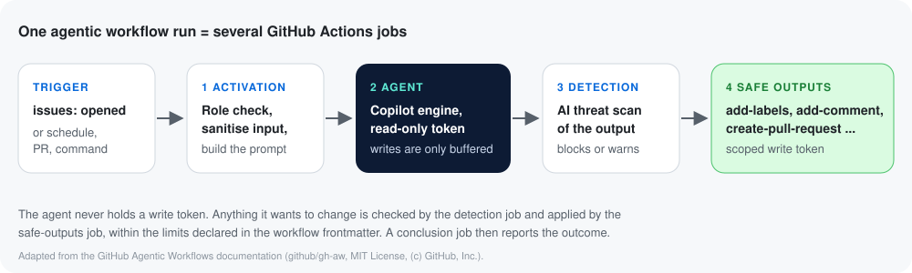

Overview
The GitHub agent-native engineering system
What each capability in the deck does, where it shows up in the workshop, and what it costs. Facts are linked to GitHub Docs and the GitHub Changelog, checked on 12 November 2026.
The system in one picture
The deck groups the platform into two halves: AI that does the work (agentic workflows, Copilot Fusion, the Copilot app, Copilot Automations) and application security built in, not bolted on (Secret Protection, Code Security, Copilot Autofix, AI scan, Dependabot). The workshop uses one capability per chapter:
| Deck capability | Status (12 Nov 2026) | Where you use it |
|---|---|---|
| Agentic workflows | GA 28 Oct 2026 (source) | Chapter 2: issue triage agent |
| Copilot Fusion | GA 28 Oct 2026 (source) | Chapter 3: build the Careers page |
| Copilot code review | GA; approvals opt-in (source) | Chapter 4 |
| Code Security: CodeQL + Copilot Autofix | GA; free for public repos (source) | Chapter 5 |
| Secret Protection: push protection | GA; AI-detected secrets in push protection preview (source) | Chapter 5 |
| Dependabot | GA; reachability analysis preview, GitHub Enterprise Cloud only | Chapter 6 |
| AI scan for repositories | public preview (October changelog) | Chapter 7 (discussion) |
| Copilot app: Projects | public preview (source) | Not used (desktop app) |
| Copilot Automations | Private and internal repositories only (source) | Not used: this workshop repo is public |
Agentic workflows (GitHub Agentic Workflows, gh-aw)
You write a workflow in Markdown: YAML frontmatter for the trigger, permissions, tools and allowed outputs, then plain-language instructions. The gh aw CLI compiles it into a hardened GitHub Actions workflow (.lock.yml) that runs an AI engine (GitHub Copilot by default) on GitHub-hosted runners (how it works).

Safe outputs
The agent job only gets read permissions. Labels, comments, issues and pull requests are requested as safe outputs, scanned by a detection job and applied by a separate job, within the limits you declare (source).
Natural language in, Actions out
Copilot CLI writes the Markdown for you using the agentic-workflows skill that gh aw init installs; you review it like any code.
Copilot Fusion
Instead of picking one model, you pick Copilot Fusion and Copilot routes and combines models for the task, showing its progress as it works. Effort tiers are Standard, High and Max. It is available in Copilot CLI, VS Code, JetBrains and the GitHub Copilot app (docs, changelog).
- Select it:
/modelin Copilot CLI, or the model picker in VS Code and the app. Scripted:copilot --model fusion. - Cost: no separate fee; each underlying model call is billed in GitHub AI Credits at that model's rate. The Copilot CLI banner in the real run advertised 30% off Copilot Fusion usage through November 30, 2026.
- Governance: your organisation's model policies decide which models Fusion may use.
Copilot code review
Request a review from Copilot in the pull request's Reviewers menu, or make it automatic with a repository ruleset rule (Automatically request Copilot code review). Copilot follows .github/copilot-instructions.md and path-specific *.instructions.md files (docs).


- Effort: Balanced is the default effort level; Max is in public preview (source, source).
- Approvals: Copilot can approve pull requests only if you opt in; otherwise it leaves comment reviews and never blocks a merge.
- Billing: reviews consume AI credits plus Actions minutes; Copilot Free does not include code review (source).
GitHub Code Security
CodeQL code scanning turns code into a queryable database and finds vulnerabilities such as SQL injection and cross-site scripting on every push and pull request. Default setup is a few clicks in Settings → Advanced Security (docs).

Copilot Autofix proposes a patch with an explanation, in pull requests and on existing alerts (Generate fix). It is free for public repositories and does not need a Copilot licence (docs).

AI scan for repositories public preview scans the whole default branch on demand, including languages CodeQL does not cover; it uses AI credits even on public repositories. Security campaigns bundle historical alerts for developers to burn down, with Copilot-generated fixes.
GitHub Secret Protection
Secret scanning finds credentials across the full Git history; push protection blocks them at git push, in web edits, uploads and the API before they land. Delegated bypass, custom patterns and validity checks need GitHub Secret Protection on private repositories (source).

GitHub's own tutorial provides a safe dummy token to see push protection without leaking anything real; Chapter 5 uses it (source).
Dependabot
Dependabot alerts flag vulnerable dependencies, security updates open pull requests that fix them, and version updates keep packages and GitHub Actions current on a schedule (quickstart). Alerts can also be assigned to Copilot (source).


Reachability analysis preview marks alerts as reachable or unreachable from your code (npm, Yarn and pnpm lockfiles; GitHub Enterprise Cloud only).
GitHub Advanced Security packaging
GitHub Secret Protection
Secret scanning, push protection, AI-detected secrets, custom patterns, delegated bypass, validity checks, security overview.
GitHub Code Security
CodeQL code scanning, Copilot Autofix, AI scan, security campaigns, dependency review, custom auto-triage rules, security overview.
Dependabot
Alerts, security updates and version updates on every plan; reachability needs GitHub Enterprise Cloud during the preview.
Both products are sold per active committer (pushed in the last 90 days) and need GitHub Team or GitHub Enterprise (source). Check current prices with your GitHub account team.
Security comparison: who finds what, and when
| Capability | Finds or does | Runs when | Where results show | Who fixes | Cost |
|---|---|---|---|---|---|
| Copilot code review | Bugs, logic, readability and rule breaks in a PR diff, guided by your instructions | On request, or automatically by ruleset | PR review comments with suggestions | Author applies suggestions; Copilot can approve only if enabled | Copilot plan; AI credits + Actions minutes |
| CodeQL code scanning | Security vulnerabilities (XSS, injection, path traversal, ...) by data-flow analysis | Push and PR to protected branches, plus weekly | Security and quality tab; PR checks and annotations | Developers, helped by Autofix | Free on public repos; Code Security on private |
| Copilot Autofix | A patch and explanation for a code scanning alert | On PR alerts automatically; Generate fix on existing alerts | The alert and the PR | Developer reviews and commits | Free on public repos; Code Security on private |
| AI scan (preview) | AI-found vulnerabilities across the whole default branch, incl. languages CodeQL misses | On demand | Code scanning alerts | Developers / Autofix | AI credits, even on public repos |
| Secret scanning + push protection | Leaked credentials: partner patterns, custom patterns, AI-detected passwords | Every push, web edit, upload; full history | Push is blocked; Secret scanning alerts | The pusher removes it; the owner rotates it | Free on public repos; Secret Protection on private |
| Dependabot | Vulnerable and outdated dependencies, with fix PRs | When advisories or the dependency graph change; on schedule | Dependabot alerts; pull requests | Maintainers merge Dependabot PRs (or assign Copilot) | Included; reachability preview on GHEC |
Deck vs GitHub sources
| The deck says | GitHub sources say (12 Nov 2026) |
|---|---|
| Copilot Projects: GA | Public preview in the GitHub Copilot app (source). |
| Copilot Automations: GA | No general-availability announcement found; automations run only in private and internal repositories (source). |
| Code review leaves comments | Since 28 Oct 2026 Copilot can also approve pull requests if you opt in (source). |
| Premium requests | Copilot usage is billed in GitHub AI Credits since 1 June 2026 (source). |
| Reachability analysis for Dependabot | Public preview and GitHub Enterprise Cloud only. |